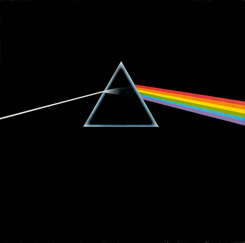

<!DOCTYPE html>
<html lang="en" data-theme="dsotm">
<head>
  <meta charset="utf-8">
  <meta name="viewport" content="width=device-width, initial-scale=1">
  <title>The Dark Side of the Moon — Pink Floyd Quad Cortex Tone Guide</title>
  <link rel="preconnect" href="https://fonts.googleapis.com">
  <link rel="preconnect" href="https://fonts.gstatic.com" crossorigin>
  <link href="https://fonts.googleapis.com/css2?family=IBM+Plex+Mono:wght@400;500;600&family=Source+Serif+4:opsz,wght@8..60,400;600;700&family=Syne:wght@600;700;800&display=swap" rel="stylesheet">
  <link rel="stylesheet" href="../../assets/styles.css">
</head>
<body>
  <div class="app">
    <aside class="sidebar">
      <div class="brand">
        <a class="brand-home" href="../../index.html" title="QC Tone Guides — all artists"></a>
        <div>
          <h1>The Dark Side of the Moon</h1>
          <p>Pink Floyd · 1973 · QC-first</p>
        </div>
      </div>
      <nav class="album-nav">
        <a class="active" href="dark-side-of-the-moon.html">Dark Side of the Moon</a>
      </nav>
      <input id="search" class="search" type="search" placeholder="Filter songs or presets">
      <div id="tracks"></div>
    </aside>
    <main id="main" class="main"></main>
  </div>
  <script src="assets/data-dark-side.js"></script>
  <script src="assets/app.js"></script>
</body>
</html>
